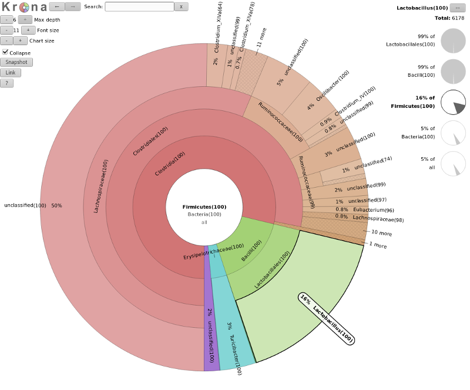

Introduction to Microbiome Analysis
Contributors
Microbiome Analysis
Overview
- Why study the microbiome?
- 2 different approaches
- Amplicon sequencing
- Shotgun sequencing
- Analysis pipelines
- Visualisation options
Why study the microbiome?
.pull-left[
- Health care research
- Humans are full of microorganisms
- Skin, gut, oral cavity, nasal cavity, eyes, ..
- Affects health, drug efficacy, etc
] .pull-right[
.image-100[ ]
]
- Sometimes referred to as your second genome
- ~10 times more cells than you
- ~100 times more genes than you
- ~1000s different species
Why study the microbiome?
- Environmental studies
- Microbes in the soil affect plants and animals
- Improve agriculture
.image-75[ ]
Shotgun vs Amplicon
.pull-left[
.image-75[  ]
]
Shotgun Sequencing
- Sequence all DNA
- More information
- Higher complexity
- Higher cost ]
.pull-right[
.image-75[  ]
]
Amplicon Sequencing
- Sequence only specific gene
- No functional information
- Less complex to analyse
- Cheaper ]
Speaker Notes
puzzle analogy: think of each organism as a jigsaw puzzle
-
shotgun: we considers all pieces (DNA) from all puzzles (organisms); we throw the pieces in a big pile, and need to reconstruct each individual puzzle from this. It is more complex, but you get full details (functional information) about the picture on each puzzle.
-
amplicon: we only look at the corner pieces, these are easy to spot, and all puzzles have them. It will not tell us all the details (e.g. functional information) of the picture on the puzzle, but might be enough to tell us whether it is a landscape or a portrait or abstract art for instance (taxonomy).
Amplicon
- Targetted approach, e.g. 16S (bacteria), 18S (eukaryotes), ITS (fungi)
- Amplify gene of specific taxonomic group, i.e. not host or environment

Amplicon
- Highly conserved gene: easy to target across all bacteria
- With variable regions: distinguish between genus

Speaker Notes V1, V2 etc are the variable regions
Amplicon
- Pros
- Well-established
- Inexpensive ($50-$100/sample)
- Cons
- V-region choice can bias results
- Is based on a very well conserved gene, making it hard to resolve species and strains
Speaker Notes 18S gene also amplifies archaea
Shotgun metagenomics
-
Aims to sequence the “whole” metagenome
- Pros:
- Not biased by amplicon primer set
- Not limited by conservation of the amplicon
- Can also provide functional information
- Cons:
- Environmental contamination, including host
- More expensive ($1000+/sample)
- Complex data analysis
- Requires high performance computing, high memory, high compute capacity
End-to-End

Every step in this process can have serious impact on the results
Bioinformatics

Roche 454 GS: ~ 100.000 reads
Illumina MiSeq: ~ 25.000.000 reads
Shotgun: ~ ? reads
Analysis pipelines

Amplicon analysis variants:
- OTU: operational taxonomic units
- ASV: amplicon sequence variants
Pre-processing

- There are a lot of ways to filter and trim your data
- Trade-off between quality and amount of information retained
OTU Clustering / Denoising
.pull-left[ OTU clustering:
- Cluster on 97% sequence similarity for genus-level differentiation
- OTUs depend on the data set: no comparability of data sets
.image-75[  ]
]
]
.pull-right[ ASV Denoising:
- Discriminate sequence variations from sequencing errors
- Based on an error model and the assumption that sequences containing errors are less likely observed repeatedly
.image-90[ ]
]
Speaker Notes ASV stands for “Amplicon Sequence Variants”
TODO: expand on OTU vs ASV a bit more
Chimera Removal
- During PCR multiple sequences can combine to form a hybrid
- Must be removed from your data for better results
Search marker database and taxonomy assignment
- Homology with reference databases
-
Amplicon

-
Shotgun: MetaPhlAn2 database
- ~1M unique clade-specific marker genes
- ~17,000 reference genomes (bacterial and archaeal, viral and eukaryotic)
-
- Accuracy depends on quality and completeness of database used
- Databases are inevitable incomplete
Search functional database
- Databases to identify gene families
- UniRef50
- UniRef90
- Grouping in other functional categories
- MetaCyc Reactions
- KEGG Orthogroups (KOs)
- Pfam domains
- Level-4 enzyme commission (EC) categories
- EggNOG (including COGs)
- Gene Ontology (GO)
- Informative GO
- Pathway reconstruction
Results: OTU table

Results: Visualizations
- Krona
- interactive exploration of sample taxonomy

Results: Visualizations
- Phinch
- BIOM file input
- various visualizations
- multi-sample data

Thank you!
This material is the result of a collaborative work. Thanks to the Galaxy Training Network and all the contributors! Tutorial Content is licensed under
Creative Commons Attribution 4.0 International License.
Tutorial Content is licensed under
Creative Commons Attribution 4.0 International License.